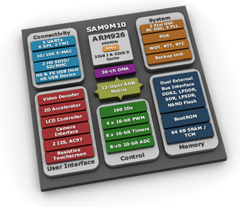

AT91SAM9M10 Special Page
Introduction
| Hi! Welcome to the Linux4SAM page dedicated to the newly introduced AT91SAM9M10 SOC. This page provides the latest information on this MPU in the same way as elsewhere on the site Linux4SAM. Each component is detailed in its own section just below. As is always done for the material we publish on Linux4SAM, These special releases will be integrated in each component release cycle and the associated Open Source upstream project. The embedded video decoder can be used with GStreamer components |
 |
GettingStarted
| |
Basic components
AT91Bootstrap
Pre-built binaries
| Board | Description | Binary |
|---|---|---|
| !DataFlash | ||
| at91sam9m10ekes | AT91Bootstrap binary with 2nd level application in Dataflash chip (SPI 0 CS 0) | dataflash_at91sam9m10ekes.bin |
| at91sam9m10g45ek | AT91Bootstrap binary with 2nd level application in Dataflash chip (SPI 0 CS 0) | dataflash_at91sam9m10g45ek.bin |
| !NandFlash | ||
| at91sam9m10ekes | AT91Bootstrap binary with 2nd level application in NandFlash | nandflash_at91sam9m10ekes.bin |
| at91sam9m10g45ek | AT91Bootstrap binary with 2nd level application in NandFlash | nandflash_at91sam9m10g45ek.bin |
Boot capabilities matrix
Here is :| Product | Boot from DataFlash (SPI0 CS0) |
Boot from DataFlash (SPI0 CS1) |
Boot from NAND Flash |
Boot from SD card |
Boot from NOR Flash |
Boot from Internal Flash {{Only available on products with embedded Flash}} |
|---|---|---|---|---|---|---|
| at91sam9m10ekes | |
|
|
|||
| at91sam9m10g45ek | |
|
|
Build AT91Bootstrap from sources
Sources and build process are described in the AT91Bootstrap application noteU-Boot
U-boot 1.3.4 experimental binaries
| Board | Description | Binary |
|---|---|---|
| !DataFlash | ||
| at91sam9m10ekes | u-boot binary with environment in Dataflash chip (SPI 0 CS 0) | u-boot-1.3.4-exp.4-at91sam9m10ekes-dataflash_cs0.bin |
| at91sam9m10g45ek | u-boot binary with environment in Dataflash chip (SPI 0 CS 0) | u-boot-1.3.4-exp.5-at91sam9m10g45ek-dataflash_cs0.bin |
| !NandFlash | ||
| at91sam9m10ekes | u-boot binary with environment in NandFlash | u-boot-1.3.4-exp.4-at91sam9m10ekes-nandflash.bin |
| at91sam9m10g45ek | u-boot binary with environment in NandFlash | u-boot-1.3.4-exp.5-at91sam9m10g45ek-nandflash.bin |
U-boot 1.3.4 experimental sources
| Description | Source | Patch |
|---|---|---|
| Add experimental functions to AT91 u-boot | u-boot 1.3.4 archive u-boot 1.3.4 tag on git tree |
u-boot-1.3.4-exp.5.diff |
Linux Kernel
Pre-built images
| 2.6.30 (2.6.30-at91-exp.4.patch) | |||
|---|---|---|---|
| Board | Description | Binary | Configuration file |
| at91sam9m10g45ek | linux-2.6.30 uImage | linux-2.6.30-at91-exp.4-at91sam9m10g45ek.bin |
at91sam9m10g45ek_defconfig |
| 2.6.30 (2.6.30-at91-exp.3.patch) | |||
| Board | Description | Binary | Configuration file |
| at91sam9m10ekes | linux-2.6.30 uImage | linux-2.6.30-at91-exp.3-at91sam9m10ekes.bin |
at91sam9m10ekes_defconfig |
Linux4SAM AT91SAM9M10 Experimental Patches
2.6.30-at91-exp.4.patch
- basically all support provided by previous 2.6.30-at91-exp.3 patch
- Adding support for AT91SAM9M10G45-EK board
2.6.30-at91-exp.3.patch
- basically all support provided by previous 2.6.30-at91-exp.2 patch
- Adding of all code that is needed for driving ON2 embedded video decoder IP (GPL)
- Add on2-8170 GPL modules
2.6.30-at91-exp.2.patch
- basically all support provided by previous 2.6.30-at91-exp patch
- AT91SAM9M10 addition to experimental patchset
AT91 Linux kernel sources summary table
| Linux Kernel revision | Vanilla Linux Kernel | AT91 Maintainer patchset | Experimental patches |
|---|---|---|---|
| Linux 2.6.30 | linux-2.6.30.tar.bz2 |
2.6.30-at91.patch.gz |
2.6.30-at91-exp.4.tar.gz |
Open source embedded distribution solutions
OpenEmbedded / Ångström
Angstom 2008.1 binaries
| Board | Description | Binary |
|---|---|---|
| at91sam9m10ekes | Angstrom x11 (graphical) image tailored for AT91 JFFS2 root filesystem | Angstrom-x11-at91sam9m10-image-glibc-ipk-2009.X-stable-at91sam9m10ekes.rootfs.jffs2 |
| at91sam9m10g45ek | Angstrom x11 (graphical) image tailored for AT91 JFFS2 root filesystem | Angstrom-x11-at91sam9m10-image-glibc-ipk-2009.X-stable-at91sam9m10g45ek.rootfs.jffs2 |
How to build Angstrom for AT91SAM9M10
Connect to the Ångström building page where detailed information are provided.AT91SAM9M10 embedded video decoder solutions
| Check the Gstreamer plugin page. |


| I | Attachment | Action | Size | Date | Who | Comment |
|---|---|---|---|---|---|---|
| |
sam9m10.jpg | manage | 36.7 K | 2010-01-15 - 11:25 | NicolasFerre |
r8 - 04 Dec 2013 - 14:32:37 - NicolasFerre

{kind=link}
{kind=link}
Copyright © by the contributing authors. All material on this collaboration platform is the property of the contributing authors.
Linux® is the registered trademark of Linus Torvalds in the U.S. and other countries.
Microchip® and others, are registered trademarks or trademarks of Microchip Technology Inc. and its subsidiaries. 
Arm® and others are registered trademarks or trademarks of Arm Limited (or its affiliates). Other terms and product names may be trademarks of others.
Ideas, requests, contributions ? Connect to LinksToCommunities page.